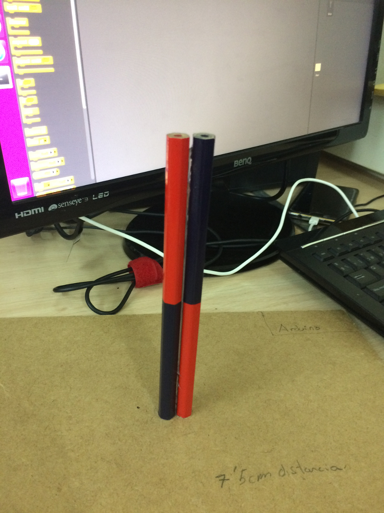

1. Comprar els productes indicats
2. Fer els planols de l'esquema
3. Fabricar la peça on es col·locarà el sabò
4. Una vegada obtingut tot l'anterior hem de marcar en la base on anirà en cada lloc les peces
5. Una vegada tenim totes les peces podrem començar a enganxar els components en cada lloc
6. Primer hem enganxat els "troncs" per el ventilador
7. Ara amb l'Arduino farem les comandes per al ventilador y el servo.
Ventilador: int fan = 12; void setup() { pinMode(fan, OUTPUT); } void loop() { digitalWrite(fan, HIGH); delay(5000); digitalWrite(fan, LOW); delay(2000); }
Micro-Servo:
// Incluímos la librería para poder controlar el servo
#include